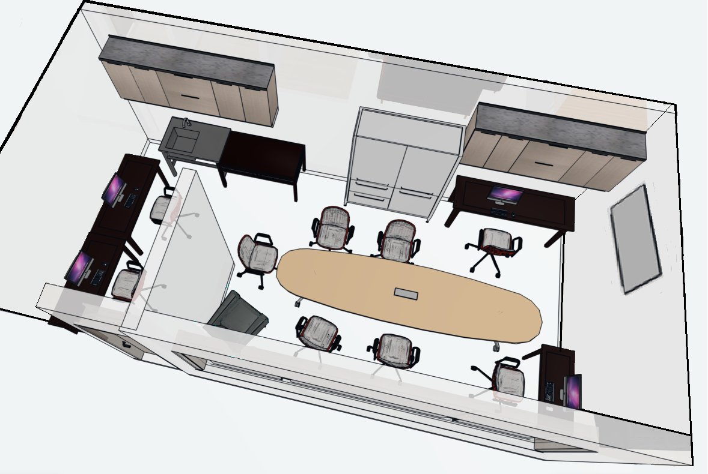

Teknisk och kreativ produktion med fokus på digitalt skapande, AI och självständigt arbete.

Grupp 4 & 5 präglas av en varierande och social atmosfär. Stämningen kan upplevas som både spänd och uppslupen beroende på dagsform och tid på dagen. Samtalet är en central del av vardagen.
Tempot är övergripande lugnt och formas gemensamt av deltagare och personal. Förutsägbarhet i rutiner bidrar till stabilitet även när dynamiken förändras.
Fredagsfika är en återkommande och betydelsefull aktivitet som stärker sammanhållningen. Gruppen fungerar ofta som bäst efter lunch, särskilt efter gemensamt samtal runt bordet.